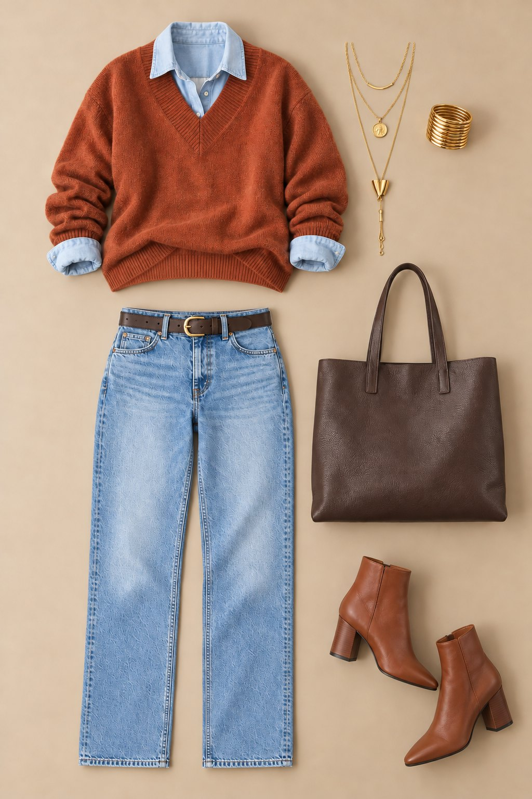
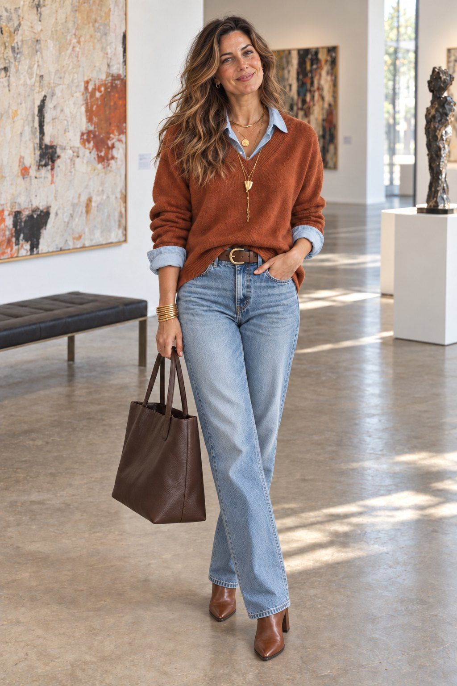

Metka Albreht · Sample, option A
A rust cashmere V-neck over a light denim shirt, clean light jeans, a brown belt with a brass buckle, cognac ankle boots and a dark brown leather tote. Six real pieces you can buy; tap a number to open its shop.

1Cashmere V-neck · SRG 2Denim shirt · Sézane 3Straight-leg jeans · COS 4Leather belt · Ezra Arthur 5Ankle boots · Anna Field 6Leather tote · & Other Stories
Prices as listed by the shops on 11 October 2026. The pictures were made with AI; the pieces are real products.